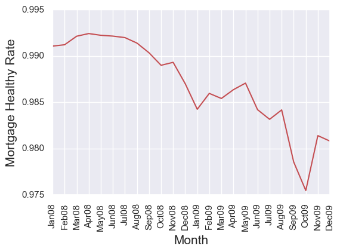
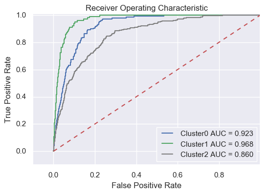

Freddie Mac Project
The goals of this project are to investigate how the financial meltdown affected the mortgage portofolio, and to build a prediction model for credit risk/delinquency.
Data are from the Freddie Mac Single Family Loan-Level Dataset. There are two types of datasets, the origination data and the performance data. The origination data was generated at the initiation of mortgage borrowing, with features including loan characteristics such as FICO, LTV, CLTV, property type, etc. The performace data were collected monthly to monitor mortgages' behavior, with features including delinquency states, mortgage insurance recovery, interest rate adjustment, etc. In this project, I processed, analyzed and modeled the downloaded data (~14GB in zipped files) with python, and its associated visualization and machine learning packages including numpy, pandas, scikit-learn, matplotlib, seaborn, etc. I am mainly focused on using logistic regression model in this project, which is widely used in credit risk business.
Mortgages during the Financial Meltdown
The first part of this project is to investigate the effect of financial meltdown on Freddie Mac mortgages. First of all, I compared FICO scores of all Freddic Mac mortgages issued in each season of 2008 and 2009.
From this figure, we can see that after the financial meltdown, loans in general have high credit scores (FICO), i.e., the portion of subprime loans decreased substantially in the mortgage portfolio.
Next, I compared delinquency rate of all Freddic Mac mortgages issued in each season of 2008 and 2009. Here the delinquency is defined based on the performance dataset that is reported 60 months after the mortgage issuing, with the criteria as follows:
- A loan has reached 90+ days in delinquency.
- A loan has shown recovery amount as recovery usually comes after foreclosure and repossession by the bank.
- A loan has been modified, i.e., interest rate reduction after negotiating with the bank.
From this figure, we can see that the quality of loans originated after the financial meltdown is considerably higher, i.e., their delinquency rate became much lower compared to those loans originated before the meltdown.
At the same time, I built transition matrices of loan status, which are cross-tabulation tables presenting the probability of transition from one status to another. Such matrices are the foundation to build a Markov Chain model for forecasting risk and for cash flow analysis.
Here I calculate a transition matrix from Novemeber 2008 to December 2008, two months after the breakout of financial crisis. Status 0.0 indicates mortgages in healthy form, while delinquncy becomes more and more severe from status 1.0 to status 6.0, and mortages in worst conditions are labeled as charge-off. The row and column indices of this table indicate credit status of November and December 2008, respectively. For instance, ~1 percent of healthy mortages of November deteriorate to status 1.0 in the following month, while ~33 percent of mortgages of status 1.0 in November return to healthy state in December. Note in this calculation, I only compiled 3-year old martgages.
| status |
0.0 |
1.0 |
2.0 |
3.0 |
4.0 |
5.0 |
6.0 |
charge-off |
All |
| 0.0 |
0.989325 |
0.010553 |
0.000082 |
0.000016 |
0.000003 |
0.000005 |
0.000008 |
0.000008 |
1.0 |
| 1.0 |
0.328482 |
0.465467 |
0.205030 |
0.001021 |
0.000000 |
0.000000 |
0.000000 |
0.000000 |
1.0 |
| 2.0 |
0.104630 |
0.147818 |
0.298753 |
0.445236 |
0.002671 |
0.000445 |
0.000000 |
0.000445 |
1.0 |
| 3.0 |
0.072312 |
0.031399 |
0.064700 |
0.137012 |
0.689819 |
0.003806 |
0.000951 |
0.000000 |
1.0 |
| 4.0 |
0.077033 |
0.005706 |
0.014265 |
0.025678 |
0.082739 |
0.793153 |
0.001427 |
0.000000 |
1.0 |
| 5.0 |
0.083799 |
0.005587 |
0.003724 |
0.005587 |
0.018622 |
0.042831 |
0.839851 |
0.000000 |
1.0 |
| 6.0 |
0.042553 |
0.002660 |
0.005319 |
0.000000 |
0.002660 |
0.010638 |
0.029255 |
0.906915 |
1.0 |
| charge-off |
0.000000 |
0.000000 |
0.000000 |
0.000000 |
0.000000 |
0.000000 |
0.000000 |
1.000000 |
1.0 |
| All |
0.964036 |
0.020766 |
0.006281 |
0.003100 |
0.002106 |
0.001551 |
0.001228 |
0.000931 |
1.0 |
We can build similar transition matrices for each month to analyze general mortgage performance. Here I calculated a times series of percentage of mortgages that remained at status 0.0 in the following month (I called it mortgage healthy rate in the plot below). We can see that this rate drops ~1-2 percent after the financial crisis, possibly because subprime mortgages became more difficult to get. Note that 1 percent drop is significant, indicating more than 3,000 mortages are downgraded.

Mortgage Delinquency Model
Now I have shown several exploratory analysis of Freddic Mac mortgages. The next part is to build a simple, white-box credit risk model to detect mortgage delinquncy. White-box models (e.g., logistic regression, decision tree) are preferred here, because when a mortgage application is denied, the loaners need to explain to the applicants which not-so-good features led to their decision.
Here I am focused on 5-year old mortgages issued in 2009. Before building an actual machine learning model, a lot effort on data cleaning, exploratory analysis and transformation were made to make sure the data is in proper form to feed into the (logistic regression, LR) model. For instance, down payment is highly right-skewed, thus a log transformation is performed to make its distribution approximately normal; Several features are categorical, so dummy variables are created for them; All features are normalized to the same scale since we want to compare their coefficients to decide which features are more important.
Let us take on the cleaned and transformed data directly to build a LR model. The best model parameters are C=0.1, with L1 (lasso) penalty, obtained from gridsearch cross validation. One LR model is then trained by the training data using these parameters. Tested on the testing data, this model gives a quite decent precision score (0.98). I was amazed that such a simple model built in my first attempt has such strong performance!
However, when looking at other scores (recall, f1) other than precision, the model is actually awful.
| |
precision |
recall |
f1-score |
total# |
| 0 |
0.98 |
1.00 |
0.99 |
25382 |
| 1 |
0.75 |
0.01 |
0.01 |
506 |
| avg/total |
0.98 |
0.98 |
0.97 |
25888 |
The table above shows that, while this model did a great job predicting the 0s (non-delinquent mortgages), it did terribly on predicting 1s (delinquency)! In other words, it is going to cost Freddie Mac tons of money for not detecting the delinquent mortgages! So what is wrong here?
The reason is that the Freddie Mac dataset is highly imbalanced, i.e., only a small fraction (<2 percent) of the mortgages are delinquent. With such highly imbalanced dataset, the model will focuse on the dominant part (the 0s), since no matter how it performed at predicting 1s barely affect the general precision. This is testified by the confusion matrix shown below, where you can see that, for 25382 0s, only 1 is mis-predicted as 1, while for 506 1s, only 3 is correctly predicted.
| |
Real_0 |
Real_1 |
| Pred_0 |
25381 |
503 |
| Pred_1 |
1 |
3 |
Before moving on from the simple LR model, I want to exploit the possibility to improve its performance. Most of the scorings of this simple LR have been shown above, except for the ROC-AUC score. In LR models or other classification models based on probability, normally you need a threshold to decide when zero turns into one. The most natural and widely used threshold is 0.5, as in our simple LR model. The advantage of using the AUC score is that it considers all possible thresholds. Various thresholds result in different true positive/false positive rates. As you decrease the threshold, you get more true positives, but also more false positives. So let us test the model's AUC to see if it can be improved by varying the thresholds.
The AUC score is 0.819, far from perfect, but not bad either, implying that our simple logistic model can be improved by varying the thresholds. If we lower the threshold from 0.5 to 0.02, the confusion matrix becomes as follows.
| |
Real_0 |
Real_1 |
| Pred_0 |
18679 |
128 |
| Pred_1 |
6703 |
378 |
We can see that the true positive rate is significantly higher than that with a threshold of 0.5, at the cost of increasing false positive rate. Even in the confusion matrix with lower threshold, there are still large amounts of mis-predicted cases, since the simple LR model is far from perfect. Nevertheless, this model set a low bar for future complex models, only models with AUC scores (substantially) higher than 0.819 will be considered.
One last thing I need to present about the simple LR model is its coefficients, to check which features are more important to identify mortgage delinquency.
| features |
FICO |
CLTV |
DTI |
LTV |
Int_rt |
cnt_borr |
loan_purpose_C |
loan_purpose_P |
| coefficients |
-0.553 |
0.210 |
0.464 |
0.332 |
0.181 |
-0.359 |
0.184 |
-0.203 |
The result shows that FICO score is the most important feature, followed by debt/income ratio (DTI), number of borrowers (cnt_borr), loan/value ratio (LTV).
Now we can finally move on to build more sophisticated models! Recall that the most drawback in our simple LR model is that it does not account for the imbalance of the Freddie Mac data. I am addressing this issue in three different approaches shown below.
The first approach is one commonly used in data science community, which is resampling. Since the amount ratios of 0s to 1s is about 50 in the dataset, we could either sampling a fraction of majority entries (i.e., under-sampling), or sampling the minority entries multiple times (i.e., over-sampling) to get a new dataset that is less imbalanced. The drawbacks of under-sampling is that some infomation might be lost, while for naive over-sampling, the drawback is that you'd end up learning too much of the specific of few examples, which wouldn't generalize well. To avoid these, here I used a SMOTE resampling technique, which synthesises new minority instances between existing (real) minority instances. For more explanation, please refer it here. Building this model follows the same procedure as I did for the simple LR model, and the only difference is to change the original training data with SMOTE resampled training data. The roc-AUC score of this model, unfortunately, is similar to the simple LR model (Figure below), indicating no improvement.
Resampling seems not working for this dataset, so I turned into another approach based on a paper of Wang et al. (2005). The procedure of this approach is that, the majority group (e.g., 0s of the Freddie Mac data) was first divided by clustering algorithm such as K-Means and k-Medoids, and each cluster is joined with bootstraps of the minority group (e.g., 1s here) to make a balanced dataset, which is then modeled by LR. These individual LRs are then grouped together to form an ensemble model. This approach, unfortunately again, does not work very well with the Freddie Mac dataset, with an even slightly lower ROC-AUC score (Figure below).
I was almost giving up after the previous two attempts which failed to improve the simple LR model, until I ran into this mathematical analysis of highly imbalanced data. One major demonstration of this paper is that, for highly imbalanced data, the LR model depends only on the mean of minority predictors, no matter how spreaded they are. In other words, the LR model always tend to find the mean of minority predictors, and use that as an indicator to predict the minority label (i.e., 1s in this example). The result is that we lost a lot information of the minority group. Hypothetically, such information loss can be alleviated by clustering the minority entried into several groups, and then build a model for each group.
Here I run K-Medoids and divide the minority entries into 3 clusters, and then run the LR model against each. Finally we see some improvement (see the figure below)! All three clusters exhibit significant higher AUC score than the simple LR model, hooray!!

The result is very exciting, but if want to explain this model, it is better to know what each cluster stands for. From a few exploratory X-Y plots below, we can see that, ltv (loan to value ratio) is one feature that differ between clusters 0 and 2, while the loan purpose (cashout or purchase) could be a major factor to seprate cluster 1 from the other two. The FICO score and dti (debt income ratio) do not seem to contribute much to the clustering.
The last mission is to find the most important predictor features of the LR model for each cluster, i.e., to find those variables with highest absolute coefficients. The top 5 important features for each cluster are listed below, together with their coefficients. You can see that the importance of predictors differ significantly between different clusters. That explains why the performance of one simple LR model is weaker than this clustering-LR model.
| Cluster0 |
Cluster1 |
Cluster2 |
| feature |
co-eff |
feature |
co-eff |
feature |
co-eff |
| channel_B |
-1.825 |
channel_R |
-1.613 |
loan_purpose_C |
-1.377 |
| loan_purpose_C |
1.315 |
channel_B |
0.708 |
dti |
0.739 |
| cltv |
0.675 |
fico |
-0.692 |
cltv |
0.613 |
| fico |
-0.667 |
dti |
0.563 |
channel_B |
-0.572 |
| cnt_borr |
-0.396 |
loan_purpose_P |
-0.316 |
fico |
-0.435 |